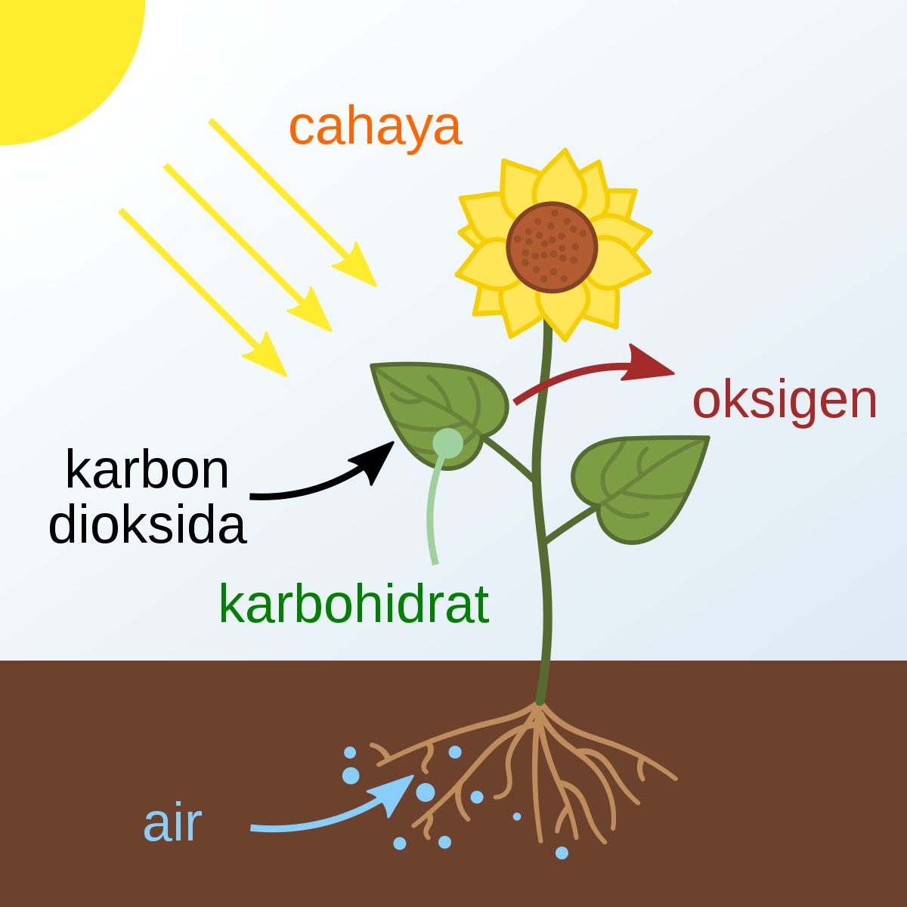

Proses Fotosintesis
Fotosintesis hanya bisa dilakukan siang hari saat ada cahaya matahari. Tumbuhan juga membutuhkan air dan karbondioksida untuk melakukan reaksi kimia fotosintesis. Tumbuhan bisa mendapatkan karbondioksida (CO2) di udara yang masuk ke daun tumbuhan lewat stomata atau mulut daun. Sementara air (H2O) bisa didapatkan lewat akar tumbuhan yang kemudian disalurkan ke daun melalui batang tumbuhan.

Saat sinar matahari jatuh ke permukaan daun, klorofil menangkap energi dari cahaya matahari tersebut. Cahaya akan melewati lapisan epidermis tanpa warna atau transparan, kemudian diteruskan menuju mesofil. Di mesofil inilah sebagian besar proses fotosintesis terjadi. Energi tersebut kemudian digunakan untuk mengubah air menjadi gula/glukosa (C6H12O6) dan oksigen (O2). Setelah itu dari proses fotosintesis akan menghasilkan makanan bagi tumbuhan. Sementara oksigen yang dihasilkan dikeluarkan oleh tumbuhan lewat stomata. Oksigen ini kemudian berada di udara bebas untuk dihirup oleh makhluk hidup lain yaitu manusia dan hewan.
Mengamati Fotosintesis
Bagaimana kita mengenali adanya fotosintesis ? Berdasar persamaan reaksi
fotosintesisnya, kita dapat mengenali fotosintesis melalui beberapa tanda atau gejala
yang ditunjukkan. Tanda tersebut adalah :
- Adanya gas O2 yang dilepaskan.
- Ada tidaknya zat tepung (amilum), atau
- Diserapnya CO2. Pada tumbuhan air seperti Hydrila, O2 yang dilepaskan kita kenali berupa gelembung udara.
Kita dengan mudah menemukan adanya gelembung udara yang dikeluarkan oleh Hydrila (Gb. x5). Kita cukup memasukkan tumbuhan tersebut ke dalam tabung reaksi yang penuh air, lalu letakkan ke tempat terkena cahaya. Biarkan sesaat, lalu amatilah. Adakah gelembung udara terbentuk ?
Gambar Hydrila dalam tabung reaksi
Untuk mengenal dari dekat gejala fotosintesis, kita perlu mengamati langsung tanda-tanda tersebut melalui percobaan. Ada beberapa masalah menarik untuk cari jawabannya melalui percobaan, antara lain adalah :
- Apakah benar cahaya mutlak dibutuhkan untuk fotosintesis ?
- Apakah intensitas cahaya menentukan kecepatan fotosintesis ?
- Apakah benar fotosintesis melepaskan O2 ?
- Benarkan CO2 dibutuhkan untuk fotosintesis ?
- Apakah kadar CO2 mempengaruhi fotosintesis ?
Untuk menemukan jawaban dari pertanyaan-pertanyaan tersebut mari buktikan dengan praktek menggunakan Virtual Lab dengan menekan tombol praktek dibawah